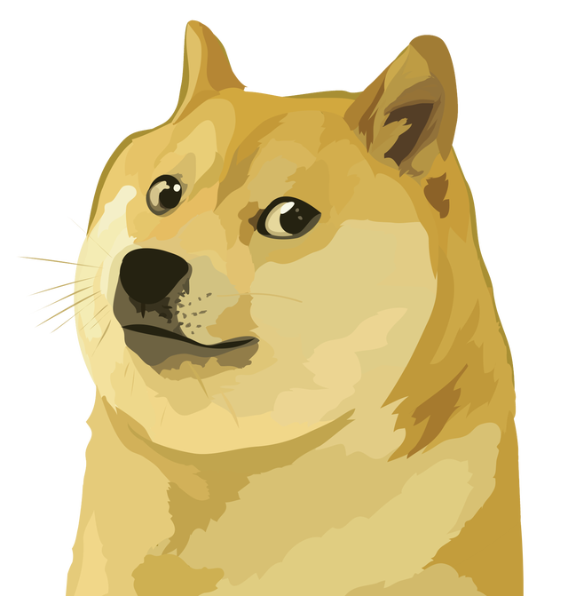

DOGECOIN
the peoples's cryptocurrency
the peoples's cryptocurrency
At its heart, Dogecoin is the accidental crypto movement that makes people smile! It is also an opensource peer-to-peer cryptocurrency that utilises blockchain technology, a highly secure decentralised system of storing information as a public ledger that is maintained by a network of computers called nodes. More than this, though, is the ethos of Dogecoin, summarised in the Dogecoin Manifesto , and its amazing, vibrant community made up of friendly folks just like you! Learn more.
The Dogecoin community cares about supporting each other, being kind, teaching people about cryptocurrency, fundraising, having fun, making memes, and being absurd. This is nicely captured by Dogecoin’s unofficial tagline: Do Only Good Everyday. Get involved in our awesome community via the below links:
Trademarks
So Home
What is Dogecoin?
Much Wallets
Very Community
So Dogepedia
About
Manifesto
Advisors
Blog
Trailmap